경영지도사-1차-2교시(구) (2017-04-08 기출문제)
1과목: 기업진단론
1. 기업의 현금유입을 가져오는 활동은?
- 매출채권의 회수
- 매입채무의 지급
- 자기주식 취득
- 이자비용 지급
- 부채의 상환
(정답률: 알수없음)

2. 다음에서 설명하는 지속가능성장률(sustainable growth rate)에 관한 계산식으로 옳은 것은?
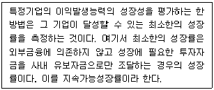
- 매출액순이익률×총자산회전율
- 유보율×총자산회전율
- 자기자본순이익률 ×총자산회전율
- 유보율×자기자본순이익률
- 자기자본순이익률 ×매출액성장률
(정답률: 알수없음)
3. 우리나라의 한국신용평가(주), 미국의 스탠다드&푸어스(Standar and Poor's), 무디스(Moody's)사 등 신용평가기관에서 주로 수행하는 분석대상에 해당하는 것은?
- 채권 발행기업의 원리금 상환능력과 채무불이행 위험
- 채권 발행기업의 교섭력과 기업문화
- 채권 발행기업의 담세능력
- 채권 발행기업의 약점과 강점 및 조직구조
- 채권 발행기업의 경영능력과 노사갈등
(정답률: 알수없음)
4. 경영분석은 재무자료분석과 비재무자료분석으로 구분할 수 있으며, 비재무자료분석은 계량화된 자료뿐만 아니라 질적자료를 포함한다. 이러한 비재무자료분석의 대상이 되는 질적 자료는?
- 재무상태표 및 포괄손익계산서
- 주가와 거래량
- 시장점유율
- 경영자의 능력 및 제품의 질
- 제품불량률
(정답률: 알수없음)
5. 재무비율 중 동태비율은?
- 당좌비율
- 부채비율
- 매출액순이익율
- 총자산회전율
- 유동비율
(정답률: 알수없음)
6. 경영분석과 기업진단의 차이점에 관한 설명으로 옳은 것은?
- 경영분석은 양적분석 방법으로만 이루어져 있고 기업진단은 질적분석 방법으로만 이루어져 있다.
- 경영분석에 비하여 기업진단은 상대적으로 문제점의 발견과 해결책 제시를 더 강조한다.
- 경영분석은 기업진단에 비해서 경영분석범위가 더 광범위하다.
- 기업진단에 비하여 경영분석이 더 많은 자료를 활용하며 문제의 발견과 해결책을 제시하는 컨설팅의 성격을 가지고 있다.
- 경영분석은 질적분석 방법으로만 이루어져 있고 기업진단은 양적분석 방법으로만 이루어져 있다.
(정답률: 알수없음)
7. 제품수명주기(product life cycle) 중 '성숙기'에 관한 설명으로 옳은 것을 모두 고른 것은?
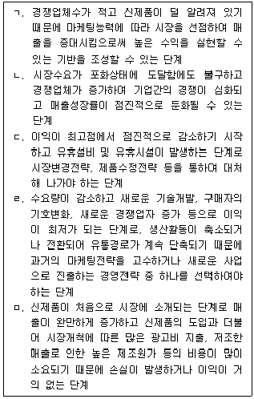
- ㄱ, ㄴ
- ㄴ, ㄷ
- ㄷ, ㄹ
- ㄹ, ㅁ
- ㄴ, ㄷ, ㄹ
(정답률: 알수없음)
8. H제약회사는 건강회복에 좋은 약이라고 광고하는 '건강활력비타민' 음료를 판매하고 있다. 이 제품의 1병 가격은 1,000원이고, 1병당 변동비는 800원, 제품생산에 소요되는 총 고정비는 10,000,000원인 경우 손익분기점 매출량은?
- 5,555병
- 10,000병
- 12,500병
- 20,000병
- 50,000병
(정답률: 알수없음)
9. 알트만(E. Altman)은 기업평가를 위한 유의적인 지표로 사용된 22개의 재무비율 중 기업부실 예측에 이용될 수 있는 5개의 재무비율을 선정하였다. 선정된 5개의 재무비율이 아닌 것은?
- 매출액/총자산
- 유동자산/총자산
- 영업이익/총자산
- 유보이익/총자산
- 자기자본/총부채
(정답률: 알수없음)
10. 공인회계사나 회계법인이 기업에 대한 감사를 행할 때 실시하는 경영분석으로 주로 회계처리의 적정성 여부와 재무제표의 분식여부를 중심으로 하는 분석은?
- 재무분석(financial analysis)
- 자본분석(capital analysis)
- 세무분석(tax analysis)
- 신용분석(credit analysis)
- 감사분석(audit analysis)
(정답률: 알수없음)
11. 현대적 경영분석에 관한 설명으로 옳지 않은 것은?
- 재무자료와 비재무자료를 활용한다.
- 현재 경영상태 및 미래의 경영상태를 예측하는 것이 주된 과제이다.
- 재무제표만으로 분석하는 과거분석을 중시한다.
- 기업 이해관계자의 의사결정에 유용한 정보를 제공하여 주는 정보처리시스템의 관점을 중시한다.
- 향후 기업활동에 유용한 실천적 측면을 중시하며 다양한 계량모형과 통계기법을 활용하여 그 적용범위가 확대되고 있다.
(정답률: 알수없음)
12. 다음 중 기업의 경영분석을 통한 의사결정 목적이 상이한 이해관계자는?
- 기업에 자금을 대여한 자
- 기업의 사채를 매입한 사채권자
- 기업의 주식을 보유하고 있는 자
- 기업에 외상으로 원재료를 공급한 공급업체
- 기업의 어음을 할인해주거나 매입한 자
(정답률: 알수없음)
13. 기업체질 삼각형(business quality triangle) 분석의 세 가지 요소는?
- 매출액, 시장점유율, 유동비율
- 매출액, 시장점유율, 투자수익율
- 유동비율, 총자산회전율, 투자수익율
- 유동비율, 매출액성장율, 부채비율
- 유동비율, 매출액성장율, 시장점유율
(정답률: 알수없음)
14. 한국은행에서 한국표준산업분류에 따라 표본기업을 선정하여 재무제표를 수집ㆍ집계하고 이를 이용하여 정기적으로 제시하는 표준비율은?
- 산업평균비율
- 경쟁기업 또는 최우량기업의 재무비율
- 과거 평균비율
- 목표비율
- 일반적인 경험비율
(정답률: 알수없음)
15. 자산총계나 매출액 총계를 100%로 하고 자산, 부채, 자본, 수익, 비용 등 각 항목의 구성비를 백분율로 표시하는 재무제표는?
- 지수형 재무제표
- 구조형 재무제표
- 관계형 재무제표
- 공통형 재무제표
- 실수형 재무제표
(정답률: 알수없음)
16. 경영부문별 기업진단 분야의 연결이 옳지 않은 것은?
- 생산 - 생산계획, 생산조직, 공정관리 등
- 판매 - 판매계획, 판매조직, 판매시장조사 등
- 구매 - 재고통제, 재료공급계획, 구매시장조사 등
- 재무 – 원가관리, 자금계획, 예산통제 등
- 인사ㆍ노무 - 경영목표, 경영계획, 경영전략 등
(정답률: 알수없음)
17. SWOT분석에 관한 설명으로 옳지 않은 것은?
- SWOT분석은 외부요인과 내부요인을 결합하여 효과적인 전략수립을 위한 분석기법이다.
- SWOT분석을 통한 전략적 대안의 선택은 기업의 성장에 도움이 된다.
- 위협을 회피하기 위해 강점을 사용하는 전략은 ST(Strength-Threat)전략이다.
- 위협을 회피하고 약점을 최소화하는 전략은 SO(Strength-Opportunity)전략이다.
- 약점을 극복함으로써 기회를 활용하는 전략은 WO(Weakness-Opportunity)전략이다.
(정답률: 알수없음)
18. 재무자료분석은 재무제표 등 회계자료를 대상으로 하는 분석방법으로 비율분석, 실수분석, 지수분석, 통계분석 등으로 구분된다. 재무자료분석 중 재무제표의 수치를 그대로 이용하는 실수분석(real number analysis)이 아닌 것은?
- 공통형 재무제표분석
- 현금흐름표분석
- 재무제표 항목의 증감액을 분석하여 각 항목이 어떤 원인에 의해서 변동하였는가를 평가하는 증감분석
- 두 개의 항목을 비교하는 비교분석
- 손익분기점분석
(정답률: 알수없음)
19. 주식회사 A전자의 비유동자산은 20,000원, 자기자본은 16,000원, 비유동부채는 2,000원이다. 주식회사 A전자의 비유동장기적합률은? (단, 소수점 셋째자리에서 반올림함)
- 111.11%
- 123.42%
- 132.59%
- 218.41%
- 247.21%
(정답률: 알수없음)
20. 다음에서 설명하는 경영분석방법은?
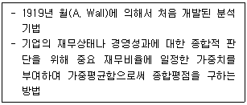
- 종합실수법
- 종합비교법
- 종합증감법
- 종합지수법
- 종합비율법
(정답률: 알수없음)
21. 기준시점의 각 재무제표항목 값을 100으로 하여 비교시점의 값을 지수로 표시한 재무제표로 기업의 재무상태와 경영성과의 변동 추세를 용이하게 파악할 수 있는 재무제표는?
- 지수형 재무제표
- 공통형 재무제표
- 실수형 재무제표
- 포괄형 재무제표
- 목적형 재무제표
(정답률: 알수없음)
22. 원형도표법에 관한 설명으로 옳지 않은 것은?
- 기업의 종합적인 경영상태를 간략하게 원형으로 표시하는 방법이다.
- 기업 경영분석에 필요한 재무요인들을 비교적 많이 표시할 수 있다.
- 다른 분석과 달리 계량화가 힘든 요인들을 나타낼 수 있다.
- 과거비율 또는 표준비율 등 비교대상과 비교함으로써 종합적으로 기업성과를 평가하는 방법이다.
- 재무비율의 선정기준이 주관적이고 선정된 재무비율의 중요도를 반영할 수 없다.
(정답률: 알수없음)
23. 기업의 전통적인 신용위험 평가 시 그 기준으로 활용되는 5C에 포함되지 않는 것은?
- 경영자의 인격(character)
- 자본조달비용(cost)
- 자본력(capital)
- 경제여건(conditions)
- 상환능력(capacity)
(정답률: 알수없음)
24. 주식회사 H텔레콤은 반도체 소자 부품을 생산ㆍ판매하고 있다. 주식회사 H텔레콤의 매출액은 365,000,000원, 매출원가는 265,000,000원이다. 이 회사의 평균매출채권은 30,000,000원, 재고자산이 20,000,000원일 경우, 매출채권평균회수기간은? (단, 근사치로 구하고, 1년은 365일로 가정함)
- 7일
- 12일
- 25일
- 30일
- 36일
(정답률: 알수없음)
25. 회계자료를 활용하여 일정기간 동안의 재무비율 증감이나 변화추세를 파악하여 재무상태가 개선되고 있는지 아니면 악화되고 있는지를 분석하는 기법은?
- 경영자분석
- 기업분석
- 경제분석
- 산업분석
- 추세분석
(정답률: 알수없음)
26. 기업의 유동성을 평가하는 당좌비율 계산 시 포함되는 항목이 아닌 것은?
- 현금
- 단기매매 유가증권
- 매출채권
- 보통예금
- 재고자산
(정답률: 알수없음)
27. 재무상태표의 유동부채 항목이 아닌 것은?
- 매입채무
- 단기차입금
- 선수금
- 미지급법인세
- 장기차입급
(정답률: 알수없음)
28. 다음에서 설명하는 용어는?
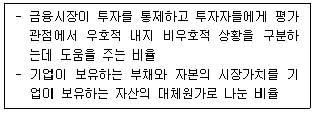
- 자기자본회전율
- 자기자본순이익률
- 부가가치비율
- 토빈의 q비율
- 총자산순이익률
(정답률: 알수없음)
29. 재무비율에 관한 설명으로 옳지 않은 것은?
- 유동성비율은 단기채무지급능력을 측정하는 비율이다.
- 자본구조비율은 부채의존도를 나타내는 것으로 기업의 장기채무지급능력을 측정하는 비율이다.
- 생산성비율은 작업장 관리에 대한 적정성과 생산시설의 안정성을 측정하는 비율이다.
- 시장가치비율은 증권시장이 특정기업의 재무상태와 경영성과에 대하여 어떻게 평가하고 있는 가를 나타내는 비율이다.
- 효율성비율은 보유자산의 이용효율성을 측정하는 비율이다.
(정답률: 알수없음)
30. 손익분기점 분석에 관한 설명으로 옳지 않은 것은?
- 고정비의 비중이 높을수록 판매량(매출액)이 증가하는 경우에는 영업이익은 증가한다.
- 손익분기점 분석은 원가와 조업도의 변화가 이익과 어떠한 관계를 가지는가에 초점을 두는 분석이다.
- 고정영업비에는 재산세, 사무실 직원의 급료 등이 있다.
- 고정영업비란 생산능력의 범위내에서 조업도의 변화에 관계없이 고정적으로 발생하는 영업비용으로 감가상각비, 판매수수료, 판매원의 성과급 및 광고비 등을 의미한다.
- 고정영업비는 판매량의 변화에 관계없이 일정하지만 단위당 고정영업비는 판매량(매출액)이 증가함에 따라 감소하는 특성을 보인다.
(정답률: 알수없음)
31. 경영분석이란 기업회계자료를 이용하여 과거 경영의 실태나 업적을 평가하고 현재의 경영실태를 파악하려는 활동이다. 이러한 경영분석에 이용되는 기본 재무(회계)자료가 아닌 것은?
- 재무상태표
- 포괄손익계산서
- 투자자산보고서
- 현금흐름표
- 이익잉여금처분계산서
(정답률: 알수없음)
32. 재무비율에 관한 설명으로 옳은 것은?
- 활동성비율이란 기업이 재고자산, 유동자산, 고정자산 등의 자원을 얼마나 효율적으로 이용하고 있느냐를 측정하는 비율이다.
- 당좌비율은 유동자산을 유동부채로 나누어 구하는 비율이다.
- 순운전자본비율은 순운전자본을 비유동성부채로 나누어 구하는 비율이다.
- 시장가치비율은 유동자산을 자기자본과 타인자본의 시장가치의 합으로 나누어 구하는 비율이다.
- 이자보상비율은 당기순이익에 감가상각비를 더한 현금흐름을 이자비용으로 곱하여 구하는 비율이다.
(정답률: 알수없음)
33. 재무레버리지에 관한 설명으로 옳지 않은 것은?
- 총재무비용에서 고정재무비가 차지하는 비중이 클수록 재무레버리지는 증가한다.
- 재무레버리지도는 고정재무비가 작을수록 작게 나타난다.
- 자기자본의 조달 없이 차입금만으로 자금을 조달하면 재무레버리지도는 낮아져 기업위험은 감소한다.
- 주주들은 재무레버리지가 높은 기업일수록 높은 위험을 느끼기 때문에 높은 기대수익률을 요구한다.
- 재무레버리지는 기업이익의 변동성을 나타낸다고 할 수 있다.
(정답률: 알수없음)
34. 비율 산출식으로 옳지 않은 것은?
- 투자자산구성비율(%) =
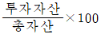
- 매출액영업이익률(%) =
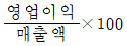
- 부가가치율(%) =
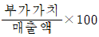
- 당좌비율(%) =
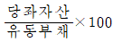
- 비유동비율(%) =
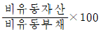
(정답률: 알수없음)
35. 재고자산회전율(회) = ( )/재고자산, 비유동자산회전율(회) = ( )/비유동자산에서 ( )에 공통적으로 들어가야 하는 용어는?
- 매출액
- 총자본
- 총자산
- 영업이익
- 당기순이익
(정답률: 알수없음)
36. 주식회사 나무의 자산총계가 1,000,000,000원, 부채총계가 750,000,000원, 자본총계가 250,000,000원 일 때 주식회사 나무의 부채비율은?
- 100%
- 200%
- 300%
- 400%
- 500%
(정답률: 알수없음)
37. 재무비율분석에 관한 설명으로 옳지 않은 것은?
- 재무비율분석은 기업의 지급능력, 안정성, 효율성, 수익성 등에 관한 다양한 정보를 제공함으로써 여러 형태의 의사결정에 도움이 된다.
- 재무비율의 정보내용은 분석목적과 이용자에 따라 상대적일 수 있으므로 해석에 유의할 필요가 있다.
- 계절성이 있는 회계자료는 계절성을 고려하여 적절히 수정 또는 조정할 필요가 있다.
- 재무비율분석을 통해 기업의 물가변동에 관한 가치 변화와 재무건전도에 영향을 주는 근본적인 원인까지도 파악하는 것이 가능하다.
- 재무비율분석만으로는 기업의 미래예측에 한계가 있으므로 다른 분석방법과 보완적으로 사용되어야 한다.
(정답률: 알수없음)
38. 납세 후 순이익 중 배당금으로 지급되는 부분을 백분율로 표시한 것으로 옳은 것은?
- 배당률
- 주가수익비율
- 배당수익률
- 주당이익
- 배당성향
(정답률: 알수없음)
39. 현금흐름표에 관한 설명으로 옳지 않은 것은?
- 기업이 조성(조달)한 현금과 사용한 현금의 내역을 정리한 회계보고서이다.
- 특정한 시점에 대한 현금 및 현금성 자산의 유입만을 나타낸다.
- 경영활동을 영업활동, 투자활동, 재무활동으로 구분하여 현금흐름을 표시한다.
- 현금흐름의 변동원인, 현금결재능력 등에 대한 유용한 정보를 얻을 수 있다.
- 차입, 사채 및 주식발행 등 자본조달활동에 관한 정보도 제공한다.
(정답률: 알수없음)
40. 기업의 재무상태표를 분석함으로써 얻을 수 있는 정보가 아닌 것은?
- 기업의 유동성에 관한 정보
- 기업의 일정기간에 대한 경영성과에 관한 정보
- 기업의 자본구조에 관한 정보
- 기업의 일상영업거래에서 발생하는 매입채무에 관한 정보
- 기업의 부채의존도에 관한 정보
(정답률: 알수없음)
2과목: 조사방법론
41. 비모수 통계분석에 관한 설명으로 옳은 것은?
- 명목 혹은 서열척도로 측정되는 자료처리에 이용한다.
- 계량적 자료분석에 이용한다.
- 모집단의 확률분포를 구체적으로 가정할 수 있어야 한다.
- 표본의 특성치인 통계량을 이용해 모집단의 모수를 추정한다.
- 모수통계분석에 비해 통계적 검정력이 높다.
(정답률: 알수없음)
42. 설문지를 활용한 대인면접조사에 관한 설명으로 옳은 것은?
- 2차 자료를 이용하는 조사방법이다.
- 새로운 사실이나 아이디어 발견에는 구조화된 대인면접조사가 적합하다.
- 우편조사에 비해 응답율이 높다.
- 동일 표본에 대한 반복적 자료수집이 용이하다.
- 구조화된 대인면접조사의 경우 상황과 응답자 특성에 맞게 질문과정을 유연하게 진행할 수 있다.
(정답률: 알수없음)
43. 응답 기업의 연간 매출액을 '원'단위로 조사하고자 하는 경우에 적합한 척도는?
- 비율척도
- 서열척도
- 등간척도
- 리커트척도
- 명목척도
(정답률: 알수없음)
44. 설문지 작성의 일반적 방법으로 옳지 않은 것은?
- 가급적 쉽게 질문한다.
- 어렵거나 민감한 질문은 앞에 위치시킨다.
- 문항이 담고 있는 내용 범위가 넓은 것에서부터 점차 좁아지도록 문항을 배열하는 것이 좋다.
- 응답항목들이 상호 배타적이어야 한다.
- 유도성 질문은 피해야 한다.
(정답률: 알수없음)
45. 다음 중 설문 문항으로 적합한 것은?
- 귀사에서 지난 1년 간 발생한 이익은 얼마입니까?
- 귀하는 시민들을 위해 지하철노조의 파업은 법적으로 금지되어야 한다고 생각하십니까?
- 귀하께서 재직중인 회사의 임금수준과 복지제도에 대해 만족하십니까?
- 귀하께서 서울 소재 A호텔에 투숙한다고 가정한다면 그 호텔을 선택한 주된 이유는 무엇입니까?
- 귀하는 사형제도 부활에 대해 찬성하십니까?
(정답률: 알수없음)
46. 표본에서 얻은 자료를 근거로 모집단의 특성을 추론하는데 적절하지 않은 표본추출방법을 모두 고른 것은?
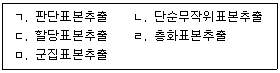
- ㄱ, ㄴ
- ㄱ, ㄷ
- ㄱ, ㄷ, ㅁ
- ㄴ, ㄹ, ㅁ
- ㄷ, ㄹ, ㅁ
(정답률: 알수없음)
47. 특정 집단에 대한 조사를 위해 조사자가 적절하다고 판단하는 조사대상자들을 선정한 다음 그들로 하여금 또 다른 대상자들을 추천하도록 하는 표본추출방법은?
- 편의표본추출
- 할당표본추출
- 임의표본추출
- 눈덩이표본추출
- 층화표본추출
(정답률: 알수없음)
48. 표본크기에 관한 설명으로 옳지 않은 것은?
- 모집단의 구성요소가 이질적인 경우 동질적인 경우에 비해 표본크기가 커야 한다.
- 표본으로부터 수집한 자료분석기법에 따라 필요한 표본크기가 달라진다.
- 요구되는 신뢰수준이 높을수록 표본크기는 커야 한다.
- 표본추출방법이 표본크기 결정에 영향을 미친다.
- 표본크기가 클수록 표본오차는 증가한다.
(정답률: 알수없음)
49. A화장품에 대한 구매의향조사를 위해 우리나라 소비자를 거주지에 따라 6개 권역으로 분류한 후 각 권역에 속한 인구수를 고려하여 표본의 크기를 정하고 표본을 임의로 추출하는 방법은?
- 체계적표본추출
- 단순무작위표본추출
- 층화표본추출
- 군집표본추출
- 할당표본추출
(정답률: 알수없음)
50. 표본설계에 관한 설명으로 옳지 않은 것은?
- 조사대상의 오염 문제가 발생하는 경우는 전수조사를 해서는 안된다.
- 선별문항(qualifier question)을 이용한 연구대상 선별을 통해 표본프레임 오류를 줄일 수 있다.
- 표본조사가 전수조사보다 비표본오차가 크다.
- 표본조사의 경우 모집단을 잘 대표할 수 있는 표본을 추출해야 한다.
- 모집단이 표본프레임 안에 포함된 경우 표본프레임 오류가 발생한다.
(정답률: 알수없음)
51. 척도법에 관한 설명으로 옳지 않은 것은?
- 어의차이 척도법은 등간척도를 이용한다.
- 스타펠 척도법은 척도 양극점에 상반되는 두 개의 표현 대신 한 개를 사용하며 중간점이 없다.
- 리커트 합산 척도법은 특정 자극에 대해 유사한 태도를 가진 사람들을 분류하는데 이용된다.
- 고정총합척도법은 비율척도를 이용한다.
- 서스톤 척도법은 척도의 등간성 확보에 목적이 있다.
(정답률: 알수없음)
52. 표본추출에 관한 설명으로 옳지 않은 것은?
- 개인과 집단은 물론 조직도 표본추출의 요소가 될 수 있다.
- 양적연구에서 표본의 크기가 클수록 유의미한 결과를 얻는데 유리하다.
- 표본의 대표성은 표본오차와 정비례한다.
- 전수조사에서는 모수와 통계치 구분이 불필요하다.
- 표본추출단위와 분석단위가 일치하지 않을 수 있다.
(정답률: 알수없음)
53. 가설에 관한 설명으로 옳지 않은 것은?
- 경험적인 검증이 가능하여야 한다.
- 개념은 정성적으로 제시되어야 한다.
- 변수 간에 논리적인 관계가 있어야 한다.
- 제시된 개념은 누구나 쉽게 이해할 수 있도록 간결하여야 한다.
- 제시된 변수는 반복된 동의어 사용을 피해야 한다.
(정답률: 알수없음)
54. 가설검증에 관한 설명으로 옳은 것은?
- 귀무가설이란 연구문제에 대한 잠정적인 대답으로 연구자가 제시한 가설이다.
- 연구자가 새로이 입증하고자 하는 내용이 귀무가설로 설정된다.
- 가설검증은 귀무가설이 옳다는 전제하에 이루어진다.
- 대립가설은 귀무가설과 반대되는 진술로서 연구자가 부정하고 싶은 가설이다.
- 대립가설을 기각시키고 귀무가설을 채택할 확률을 유의수준이라고 한다.
(정답률: 알수없음)
55. 甲판촉기획사에서는 두 가지 판촉프로그램 A, B를 개발하여 조사 의뢰사 매장 매출액에 미치는 영향을 분석하였다. 분석결과 매장 크기가 큰 경우 판촉프로그램 A보다 B를 적용했을 때 매출 증가 효과가 훨씬 큰 것으로 나타났다. 이 경우 매장 크기는 다음 중 어떤 변수에 해당하는가?
- 조절변수
- 통제변수
- 독립변수
- 매개변수
- 왜곡변수
(정답률: 알수없음)
56. 기술적 조사에 해당하는 것은?
- 전문가의견조사
- 문헌조사
- 표적집단면접조사
- 서베이조사
- 실험조사
(정답률: 알수없음)
57. 분석기법에 관한 설명으로 옳지 않은 것은?
- 회귀분석에서 결정계수(R2)는 독립변수가 종속변수의 분산을 설명할 수 있는 정도를 나타낸다.
- 분산분석의 검정 통계량은 F-비율을 이용한다.
- 요인분석은 변수들 간의 상관관계를 파악하는데 중점을 둔다.
- 카이제곱분석은 수집된 자료가 모두 등간척도로 측정된 두 변수간 독립성 여부를 조사하는데 이용된다.
- 상관관계분석은 추계(inferential) 통계기법에 해당된다.
(정답률: 알수없음)
58. 특정한 시기에 태어났거나 동일 시점에 특정 사건을 경험한 사람들을 대상으로 이들이 시간이 지남에 따라 어떻게 변화하는지를 조사하는 방법은?
- 사례조사
- 패널조사
- 추세조사
- 코호트조사
- 전문가의견조사
(정답률: 알수없음)
59. 조사방법 유형이 다른 것은?
- 표적집단면접조사
- 전문가의견조사
- 문헌조사
- 사례조사
- 실험조사
(정답률: 알수없음)
60. (ㄱ)~(ㅂ)에 관한 설명으로 옳은 것은?
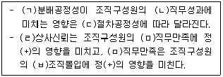
- (ㄱ)은 (ㄴ)의 종속변수다.
- (ㅁ)은 외생변수다.
- (ㄷ)과 (ㅁ)의 변수 유형은 같다.
- (ㅁ)은 (ㄹ)과 (ㅂ) 간 관계에서 조절변수다.
- (ㄴ)과 (ㅂ)은 내생변수다.
(정답률: 알수없음)
61. A 브랜드에 대한 두 가지 광고 유형 중 어느 것이 브랜드 태도 향상에 효과적인지를 실험을 통해 파악하고자 하는 경우, 외생변수로 작용할 수 있는 요인이 브랜드 인지도라는 것을 사전에 알고 실험집단 내 구성원들이 집단별로 동일한 브랜드 인지도 분포를 갖도록 함으로써 외생변수를 통제하는 방법은?
- 제거(elimination)
- 균형화(matching)
- 상쇄(counter balancing)
- 무작위화(randomization)
- 소멸(mortality)
(정답률: 알수없음)
62. 의사소통을 위한 자료수집방법 중 비체계적-공개적 의사소통방법에 해당하는 것은?
- 대인면접법
- 표적집단면접법
- 단어연상법
- 퍼플미터
- 그림연상법
(정답률: 알수없음)
63. 서로 다른 개념을 측정했을 때 얻어진 측정치들 간에 상관관계가 낮아야 한다는 것과 관련된 타당성은?
- 기준타당성
- 판별타당성
- 이해타당성
- 내용타당성
- 수렴타당성
(정답률: 알수없음)
64. 내적 타당성의 위협요인 중 표본의 대표성 관련요인으로만 이루어진 것은?
- 성숙(maturation), 회귀(regression), 상실(mortality)
- 선발(selection), 상실(mortality), 회귀(regression)
- 성숙(maturation), 역사(history), 검사(testing)
- 검사(testing), 회귀(regression), 역사(history)
- 선발(selection), 검사(testing), 성숙(maturation)
(정답률: 알수없음)
65. 서로 다른 세 가지 광고 유형에 노출된 집단간 브랜드 선호도 차이를 분석하는데 적합한 통계분석방법은?
- 시계열분석
- 판별분석
- 분산분석
- 독립표본 t검정
- 상관관계분석
(정답률: 알수없음)
66. 포퍼(K. R. Popper)가 주장한 반증주의(falsificationism)이론에 관한 설명으로 옳지 않은 것은?
- 실제 검증사항이 검증하고자 하는 이론 자체에 의존하여 이론 논박이 쉽지 않다.
- 실제 과학이론이 과거 상당한 반증이 있었음에도 불구하고 과학적 이론으로 발전해왔다.
- 기존의 이론을 검증하는데 더 큰 비중을 두고 있기 때문에 새로운 과학적 지식발전에 소홀하다.
- 내재적 한계로 인해 상대적 실증주의 또는 비판적 실증주의로 변모한다.
- 관찰시 주관이 개입되어 측정오차가 존재하고 기존의 틀을 벗어나는 검증이 어렵다.
(정답률: 알수없음)
67. 조사보고서가 바람직하게 작성되기 위해 갖추어야 할 요건으로 옳지 않은 것은?
- 본문내용의 이해를 돕기 위해 표와 그림을 많이 활용한다.
- 공개 또는 비공개 정보는 조사의뢰자와 상의하여 정한다.
- 조사결과의 전문성을 기하기 위해 전문적인 용어를 많이 사용한다.
- 조사과정에서 발생된 세부사항들은 가능한 적게 포함시킨다.
- 실무자가 주로 관심을 가지는 문제에 대한 해결방안을 강조한다.
(정답률: 알수없음)
68. (ㄱ)~(ㄷ)에 들어갈 자료수집 방법을 바르게 나열한 것은?
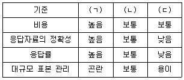
- (ㄱ): 전화조사, (ㄴ): 우편조사, (ㄷ): 면접조사
- (ㄱ): 면접조사, (ㄴ): 우편조사, (ㄷ): 전화조사
- (ㄱ): 우편조사, (ㄴ): 면접조사, (ㄷ): 전화조사
- (ㄱ): 전화조사, (ㄴ): 면접조사, (ㄷ): 우편조사
- (ㄱ): 면접조사, (ㄴ): 전화조사, (ㄷ): 우편조사
(정답률: 알수없음)
69. 측정의 신뢰성(reliability)과 유사한 개념으로 사용되지 않는 것은?
- 정확성(accuracy)
- 유연성(flexibility)
- 안정성(stability)
- 일관성(consistency)
- 예측가능성(predictability)
(정답률: 알수없음)
70. 보고서 작성 윤리에 관한 설명으로 옳지 않은 것은?
- 회사에 불리하게 나온 결과라도 보고서에 포함시켜야 한다.
- 응답자의 개인적인 응답은 공개하지 않는다.
- 조사자는 인지동의, 비밀보장을 고려해야 한다.
- 의뢰자가 동의하지 않는 한, 의뢰자의 이름을 밝혀서는 안 된다.
- 조사자는 원하는 결과가 나올 수 있도록 특정 조사방법을 선택할 수 있다.
(정답률: 알수없음)
71. 참여관찰의 특징에 관한 설명으로 옳지 않은 것은?
- 관찰대상과 일정한 거리를 유지하면서 그 대상의 행태를 관찰하는 방법이다.
- 새로운 공동체에서 사람들과 일체감을 형성한다.
- 자료의 수집활동이자 이론 생산 활동이다.
- 지각한 것을 사실적으로 인지하도록 하는데 유용하다.
- 자연적인 사회상황을 보존하는데 유용하다.
(정답률: 알수없음)
72. 투사법의 유형으로 옳지 않은 것은?
- 단어연상법
- 만화완성법
- 래더링기법
- 문장완성법
- 역할행동법
(정답률: 알수없음)
73. 과학적 연구의 진행 절차로 옳은 것은?
- 문제설정 → 자료수집 → 가설구성 → 조사설계 → 자료분석
- 문제설정 → 가설구성 → 조사설계 → 자료수집 → 자료분석
- 자료수집 → 문제설정 → 가설구성 → 조사설계 → 자료분석
- 자료수집 → 문제설정 → 조사설계 → 가설구성 → 자료분석
- 문제설정 → 가설구성 → 자료수집 → 조사설계 → 자료분석
(정답률: 알수없음)
74. 패널조사에 관한 설명으로 옳지 않은 것은?
- 동일변수를 반복 측정하는 조사방법이다.
- 횡단조사보다 신뢰성 있는 정보를 얻을 수 있다.
- 소비자 변화의 추적이 가능한 조사방법이다.
- 자료수집의 양은 적으면서, 대표성이 높다.
- 구매 당시에 정보가 기록되므로, 신뢰성 있는 정보를 얻을 수 있다.
(정답률: 알수없음)
75. 자료처리에 관한 설명으로 옳지 않은 것은?
- 자료의 유형은 숫자가 일반적이지만, 날짜나 돈을 나타내는 경우 해당 항목을 선택하여 표시할 수 있다.
- 응답자가 전체 자료에 대해 한 번호로 응답한 경우 분석에서 제외한다.
- 코딩변경 방법에는 기본변수 자체의 값을 바꾸는 방법과 새로운 변수값을 추가로 만드는 방법이 있다.
- 복수응답의 경우 각 응답을 변수화하여 처리하는 것이 분석 시 편리하다.
- 단일응답문항에 대해 복수응답한 설문의 경우에는 복수응답으로 변수 생성하여 처리한다.
(정답률: 알수없음)
76. 마케팅 정보시스템의 구성요소 중 자료수집 시스템에 해당하지 않는 것은?
- 내부정보시스템
- 마케팅인텔리젼스시스템
- 마케팅조사시스템
- 공급자관리시스템
- 고객DB시스템
(정답률: 알수없음)
77. 다음 중 유사실험 설계에 해당하는 것은?
- 단일집단 사전사후설계
- 통제집단 사전사후설계
- 솔로몬 4집단설계
- 시계열설계
- 통제집단 사후설계
(정답률: 알수없음)
78. 조사방법에 관한 설명으로 옳지 않은 것은?
- 질적 연구방법은 현상학과 해석학에 근거해 구성된 실재를 전제로 한다.
- 패널조사는 조사차수가 지남에 따라 조사거절 등의 패널이탈이 발생할 수 있다.
- 인터넷조사 표본이 모집단과 차이를 보인다면 셀 가중법에 의해 조정해야 한다.
- 양적 연구방법은 연구자의 자세를 반영하고 존재론적 입장을 체계화 시킨다.
- 하나의 연구방법에서 여러 가지 자료의 소스를 사용하는 것은 다원적 방법론이다.
(정답률: 알수없음)
79. 서베이조사 질문에 관한 설명으로 옳지 않은 것은?
- 개방형 질문의 응답범주는 상호 배타적(mutually exclusive)이며, 망라적(collectively exhaustive)이어야 한다.
- 폐쇄형 질문의 주요 단점은 조사자가 응답을 구조화 하는데 있다.
- 응답자가 질문에 대해 자신의 답을 제공하도록 하는 질문법은 개방형 질문이다.
- 폐쇄형 질문은 응답의 통일성을 제공해 주고 보다 쉽게 처리될 수 있는 장점이 있다.
- 개방형 질문은 응답과 자료분석이 어렵다는 단점이 있다.
(정답률: 알수없음)
80. 간접질문방법에 관한 설명으로 옳지 않은 것은?
- 투사법은 응답자에게 자극을 줌으로써 우회적으로 응답을 얻어내는 방법이다.
- 정보검사법은 개인이 가지고 있는 정보의 양과 종류를 파악해 응답자의 태도를 찾아내는 방법이다.
- 오류선택법은 '좋다-나쁘다', '맞다-틀리다'의 응답을 얻기 위한 방법이다.
- 단순연상법은 어떤 문제에 대해 찬성 또는 반대를 표시하는 단어나 그림을 수집해 체크하는 방법이다.
- 토의완성법은 응답자에게 두 사람의 토의를 적은 카드를 주고 토의를 완성하도록 하는 방법이다.
(정답률: 알수없음)
3과목: 영어
81. 밑줄 친 부분과 의미가 가까운 것은?
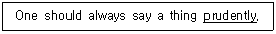
- quickly
- frugally
- typically
- carefully
- efficiently
(정답률: 알수없음)
82. 밑줄 친 부분과 의미가 가까운 것은?
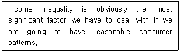
- urgent
- common
- important
- permanent
- temporary
(정답률: 알수없음)
83. 밑줄 친 부분과 의미가 가까운 것은?
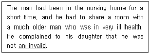
- a guilty man
- a lonely man
- a sick person
- an unpopular man
- a stubborn person
(정답률: 알수없음)
84. 빈 칸에 들어갈 단어로 옳은 것은?
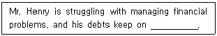
- inferring
- allocating
- reimbursing
- accumulating
- recognizing
(정답률: 알수없음)
85. ( )에 들어갈 단어로 옳은 것은?
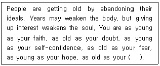
- despair
- dream
- courage
- promise
- sympathy
(정답률: 알수없음)
86. 어법상 A, B, C에 들어갈 표현으로 옳은 것은?
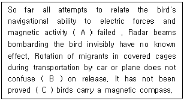
- A: has B: themselves C: that
- A: has B: them C: where
- A: have B: them C: where
- A: have B: them C: that
- A: have B: themselves C: that
(정답률: 알수없음)
87. 밑줄 친 부분 중 어법상 옳은 것은?
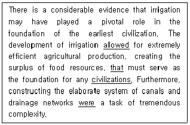
- a
- allowed
- that
- civilizations
- were
(정답률: 알수없음)
88. ( )에 들어갈 표현으로 옳은 것은?
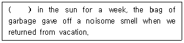
- Having been left
- Having left
- To have been left
- To have left
- Had been left
(정답률: 알수없음)
89. 어법상 밑줄 친 부분이 옳지 않은 것은?
- You can go if you returned by 6 pm.
- The boy told the truth so that he could avoid the punishment.
- You can stay here provided that you do not disturb others.
- He speaks as if he knew everything.
- I wish I had a car like yours.
(정답률: 알수없음)
90. ( )에 들어갈 표현으로 옳은 것은?
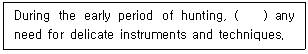
- hardly was
- so that hardly
- hardly there
- when there hardly was
- there was hardly
(정답률: 알수없음)
91. 어법상 밑줄 친 부분이 옳지 않은 것은?
- Lying on the sofa watching old films is my favorite hobby.
- If you are to make others like you, do like them first.
- Before to give a test, the teacher told the students to prepare for it.
- The sales department, located on the second floor, is opposite the supply room.
- The director let me finish the project by the end of this week.
(정답률: 알수없음)
92. 어법상 옳지 않은 것은?
- I am looking forward to seeing him next summer.
- Mr. Kim isn't used to wearing a business suit.
- He devoted all his energy to making the film.
- She has contributed money to relieving the poor.
- Your work deserves to being highly appreciated.
(정답률: 알수없음)
93. ( )에 들어갈 표현으로 옳은 것은?
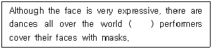
- in which
- who
- that
- which
- what
(정답률: 알수없음)
94. ( )에 들어갈 표현으로 옳은 것은?
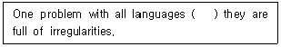
- when
- so
- is that
- in case
- once
(정답률: 알수없음)
95. ( )에 들어갈 표현으로 옳은 것은?
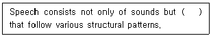
- to organize sound patterns
- also organizing sound patterns
- in organizing sound patterns
- of organized sound patterns
- that sound patterns are organized
(정답률: 알수없음)
96. 대화의 내용이 자연스럽지 않은 것은?
- A: Where to, sir?
B: Incheon International airport, please. - A: Have you been here before?
B: This is my very first time. - A: I can't wait to have a day off.
B: It's never good to waste time. - A: What do you want to do tomorrow?
B: I'm going to a rock festival. - A: I have to rush to Seoul train station.
B: Sure, let me call a cab for you.
(정답률: 알수없음)
97. 빈 칸에 들어갈 표현으로 옳은 것은?
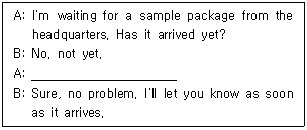
- Can I take a rain check?
- Will you come to terms with it?
- Can we see eye to eye on it?
- Could you come up with a good idea?
- Will you please keep an eye out for it?
(정답률: 알수없음)
98. 빈 칸에 들어갈 표현으로 옳은 것은?
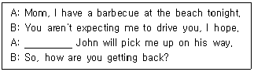
- Are you serious?
- Of course not.
- That sounds great.
- Certainly, you do.
- Don't mention it.
(정답률: 알수없음)
99. 빈 칸에 들어갈 표현으로 옳은 것은?
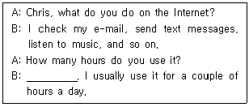
- Absolutely
- It depends
- Just as you say
- No problem
- It is over my head
(정답률: 알수없음)
100. ( )에 들어갈 표현으로 옳은 것은?
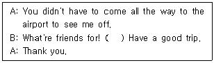
- What's up ?
- I screwed up.
- What a surprise !
- Long time no see.
- It's my pleasure.
(정답률: 알수없음)
101. 대화의 내용이 자연스러운 것은?
- A: Could I borrow the hair dryer?
B: Don't be afraid. - A: Who does your father work for?
B: He works for an electronics company. - A: Why don't you have a big lunch?
B: Because I love to get some energy. - A: Do you think I could make a phone call?
B: I think you're right. - A: Would you mind if I use the washing machine?
B: Yes, that's fine.
(정답률: 알수없음)
102. 빈 칸에 들어갈 표현으로 옳은 것은?
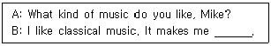
- boring
- pleasant
- catchy
- annoying
- convenient
(정답률: 알수없음)
103. A, B에 들어갈 표현으로 옳은 것은?
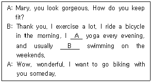
- A : do B : go
- A : go B : go to
- A : take B : play
- A : do B : play
- A : play B : take
(정답률: 알수없음)
104. 질문에 대한 응답으로 옳지 않은 것은?
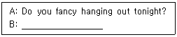
- I'd love to, but I'm grounded.
- Yes, I like a fancy style.
- I'm afraid I can't.
- Sorry, but I won't be able to.
- Another time.
(정답률: 알수없음)
1⑤. 빈 칸에 들어갈 표현으로 옳은 것은?
- How many party?
- How can I help you?
- How long will it be?
- What name is it under?
- Would you like to be on the waiting list?
(정답률: 알수없음)
106. 다음 글의 주제로 적합한 것은?
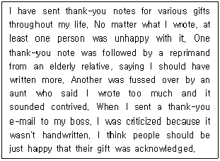
- I prefer e-mailing to writing letters.
- My relatives are hard to please.
- People shouldn't find a fault with thank-you notes.
- Too many people are unhappy.
- We should write a thank-you note more often.
(정답률: 알수없음)
107. 다음 글에서 밑줄 친 'them' 이 지칭하는 것은?
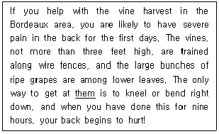
- the vines
- wire fences
- lower leaves
- ripe grapes
- the Bordeaux area
(정답률: 알수없음)
108. ( )에 들어갈 표현으로 옳은 것은?
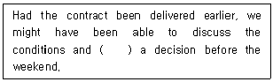
- make
- might make
- had made
- will make
- been made
(정답률: 알수없음)
109. 빈 칸에 들어갈 적절한 내용은?
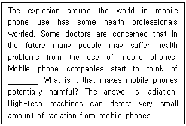
- the workability of mobile phones
- the popularity of mobile phones
- the increase of mobile phone use
- the unique features of mobile phones
- the possible danger of mobile phone use
(정답률: 알수없음)
110. ( )에 들어갈 표현으로 옳은 것은?
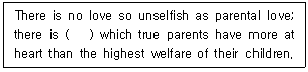
- other
- another
- nothing
- anything
- everything
(정답률: 알수없음)
111. 다음 글의 내용과 일치하는 것은?
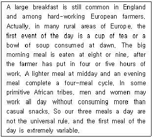
- 아침 식사는 어디서나 매우 중요하다.
- 유럽의 농부들은 하루에 세 번의 식사를 한다.
- 아프리카 사람들은 온종일 일을 하기 위해 식사를 많이 한다.
- 영국에서는 가벼운 아침 식사를 한다.
- 하루 세 번의 식사는 세계 공통이 아니다.
(정답률: 알수없음)
112. 다음 글의 내용과 일치하지 않는 것은?
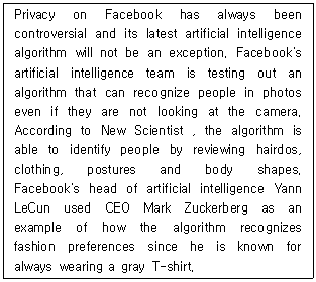
- 페이스북은 사진 속 인물을 식별할 수 있는 알고리듬을 실험 중이다.
- 인물 식별 프로그램은 삶의 질 향상을 위해 매우 유용한 것으로 입증되었다.
- 인물 식별을 위한 알고리듬은 얼굴 외의 요소들도 이용할 수 있다.
- 페이스북의 알고리듬은 즐겨 입는 옷가지들을 특정하여 사진 속 인물을 식별할 수 있다.
- 인공지능의 인물 식별 기능은 사생활 침해 관련 논란에서 자유롭지 않다.
(정답률: 알수없음)
113. 다음의 영어를 우리말로 옮긴 것 중 적절하지 않은 것은?
- Let's pick up where we left off.
중단했던 부분에서 다시 시작합시다. - Let's get the ball rolling.
일을 시작합시다. - We should think out of the box.
우리는 창의적으로 생각해야 해요. - We'll cross the bridge when we come to it.
그 상황에 처하게 되면 대처할 겁니다. - It's on the tip of my tongue.
말할 준비가 되었어요.
(정답률: 알수없음)
114. 속담을 우리말로 적절히 옮기지 못한 것은?
- A rolling stone gathers no moss.
구르는 돌은 이끼가 끼지 않는다. - One swallow doesn't make a summer.
한 가지만 보고 속단해서는 안 된다. - Every Jack has his Jill.
짚신도 다 짝이 있다. - Cut your coat according to your cloth.
분수에 맞게 생활하라. - Talk of the devil, and he will appear.
말이 씨가 되어 나쁜 일이 일어나게 된다.
(정답률: 알수없음)
115. 다음 글의 내용과 일치하지 않는 것은?
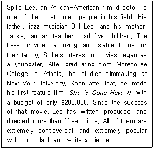
- Spike's parents had a job.
- Spike has four siblings.
- Spike was interested in movies when he was young.
- Spike made over $200,000 out of his first movie.
- Both black and white people like Spike's movies.
(정답률: 알수없음)
116. 글의 흐름으로 보아, 주어진 문장이 들어가기에 적합한 것은?
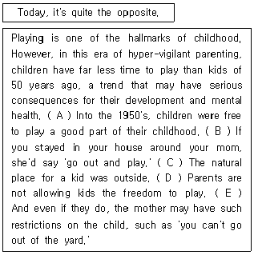
- A
- B
- C
- D
- E
(정답률: 알수없음)
117. A, B에 들어갈 표현으로 옳은 것은?
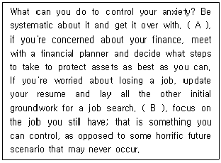
- A : In addition B : Then
- A : For instance B : Then
- A : For instance B : In short
- A : On the other hand B : Therefore
- A : In addition B : In short
(정답률: 알수없음)
118. 빈 칸에 들어갈 표현으로 옳은 것은?
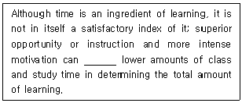
- benefit from
- suffer from
- compensate for
- result in
- bring down
(정답률: 알수없음)
119. 다음 글의 주제문으로 적합한 것은?
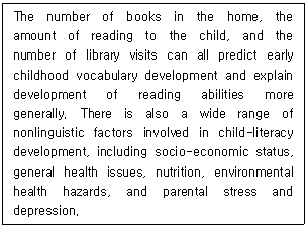
- A number of specific factors encourage early childhood literacy.
- The significance of the exposure to the printed materials is not widely recognized.
- Linguistic factors can only affect child-literacy development.
- Vocabulary is the most important factor in reading development.
- Teachers play a great role in children's development in reading.
(정답률: 알수없음)
120. 다음 글의 제목으로 적합한 것은?
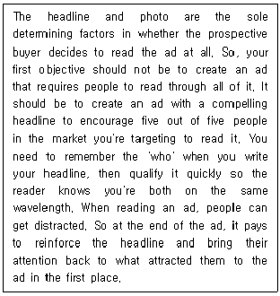
- 표제어를 이용한 효과적인 광고 작성
- 소비자를 고려하지 않은 광고의 문제점
- 광고를 통한 상품 가치의 제고 가능성
- 소비 트렌드와 광고 디자인의 상관관계
- 과장된 광고의 폐단과 문제 극복
(정답률: 알수없음)